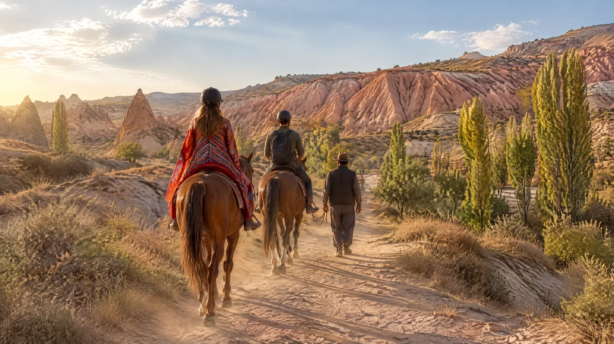

04At Turu
Güzel atlar ülkesinde, at sırtında.
Kapadokya adını "güzel atlar diyarı" sözünden alır. Sakin atlarımızla Gül Vadisi'nin dar yollarında, hiç binmemiş olanlar için bile rahat bir yürüyüş.
- Süre1 ya da 2 saat
- SeviyeBaşlangıç uygun
- En güzel saatGün batımı
- Saat
- Grup
- Fiyat
At Turu
Tur nasıl geçer
- 01
Atınızla tanışma
Atınızla tanışır, binişi ve dizgini kısaca öğrenirsiniz.
- 02
Vadide yürüyüş
Rehber eşliğinde, sıra halinde Gül Vadisi'nin patikalarına girilir. Tempo yürüyüş temposudur.
- 03
Işığın değiştiği saat
Peribacalarının arasında ilerlerken ışık değişir. En güzel saat gün batımıdır.
Bilmeniz gerekenler
- Uzun paçalı pantolon ve kapalı ayakkabı giyin.
- Daha önce hiç binmediyseniz başlamadan önce rehbere söyleyin.
- Çocuklar ve kilo sınırı için bize yazın.